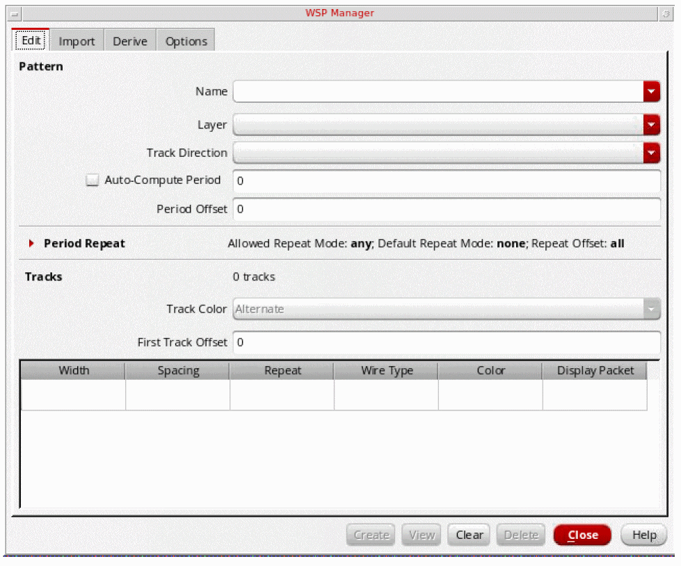
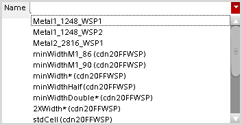
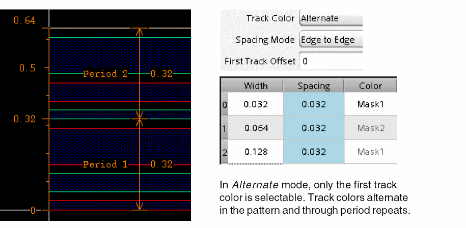
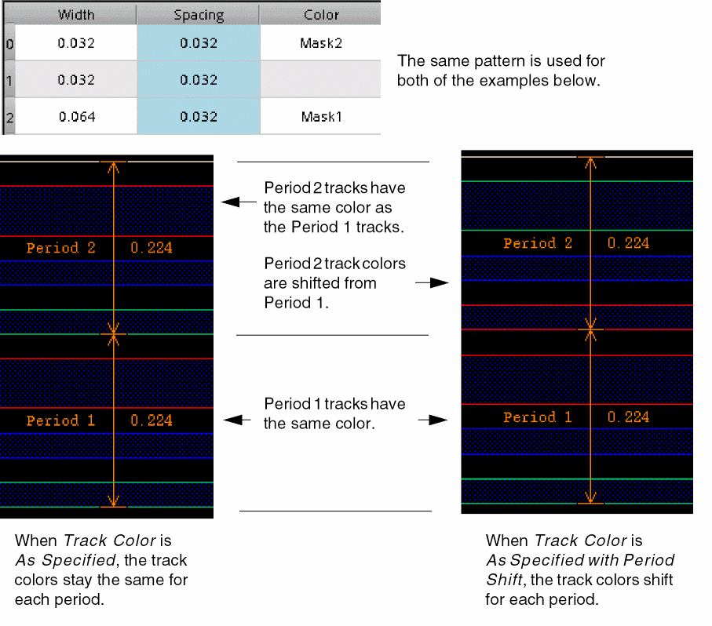
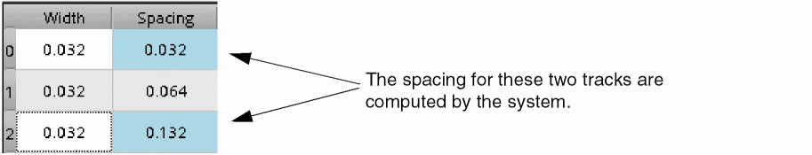
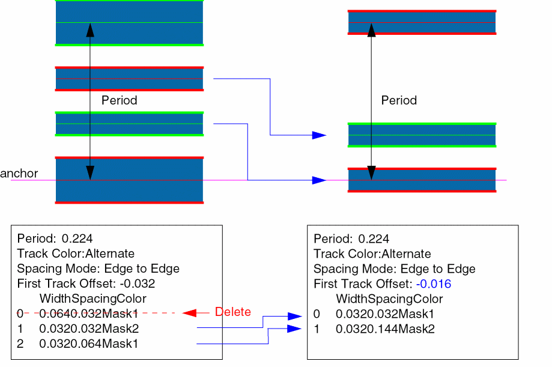
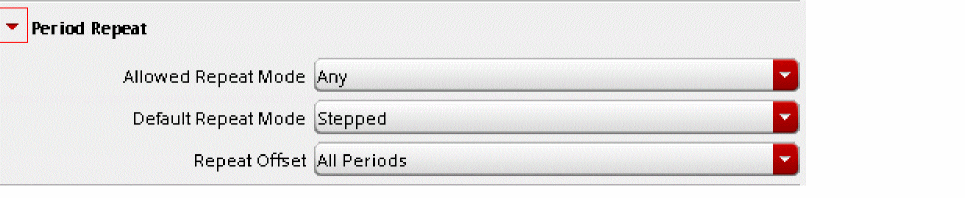

Creating and Modifying WSPs
Use WSP Manager to create and modify width spacing patterns, import width spacing patterns from other designs, and generate width spacing patterns from existing shapes in the layout canvas.
-
To use WSP Manager, choose Create – P&R Objects – Width Spacing Patterns.
The WSP Manager form is displayed.
 -
Click a tab for the action that you want:
-
Edit
Follow the procedure in Creating and Modifying WSPs. -
Import
Follow the procedure in Importing WSPs from Another Design. -
Derive
Follow the procedure in Generation of WSPs from Existing Shapes. -
Options
Follow the procedure in Specifying WSP Options.
-
Edit
In the Edit page of WSP Manager, you can create and modify width spacing patterns.
-
Specify a new pattern name in the Name field or choose a pattern from the drop-down list box.
Pattern names in the drop-down list have one of the following formats:
Examples of these formats are shown below:
 -
Choose a Layer from the drop-down list box.
Layers in the list are specified in thevalidLayersconstraint of thewireConstraintGroupconstraint group. This constraint group is specified by the wireConstraintGroup environment variable that can be set in the Wire Editing section of the Layout Editor Options form.
The drop-down list box also shows the preferred routing direction graphically, if set, for each of the layers. -
Choose a Track Direction from the drop-down list box.
- Specify the Period, in microns, or choose Auto-Compute to compute the period based on the track setup and show the computed value in the Period field. When Auto-Compute is enabled, the Period is not editable. Valid Period values are greater than 0 microns.
- Specify the Period Offset (global pattern offset), in microns, that is the distance from the start of the pattern to the PR boundary, if it exists, or to the origin in the axis specified by the Track Direction.
- Specify the tracks for the pattern, as described in Specifying WSP Tracks.
- Specify the period repeat options, as described in Specifying WSP Period Repeat Options.
- Click View to preview the width spacing pattern tracks without saving them in the design database. This button is active only when all the required fields have been set.
-
When all the required fields have been set and you are satisfied with the pattern, click Create (for a new pattern) or Update (for an existing pattern) to save it in the design database.There must be at least one track in the Tracks table and the pattern height (sum of widths and spacings in the Tracks table) cannot be greater than the Period.The CIW shows the name of the WSSPDef that is created for the pattern. If this is the first pattern for the layer, it will be the active pattern and can be viewed in the canvas. If it is not the first pattern for the layer, then you need the WSSPDef and WSP names to activate the pattern using the Track Pattern assistant.
There are additional buttons at the bottom of the WSP Manager Edit page to do the following:
-
Clear
Clears the fields and the track setup, and resets the fields to values stored in the environment variables for the form, listed in wspTemplateFile. -
Delete
Removes the current pattern from the design database.
Customizing the WSP Manager Tracks Table Columns
To change the width of a column:
Saving a Modified WSP
If you modify a WSP in the Edit page of WSP Manager, the Save Changes dialog box appears if you do not choose Update before attempting to do one of the following:
You can choose to save the modified WSP, discard the changes, or cancel.
Specifying WSP Tracks
The Tracks group at the bottom of the WSP Manager Edit page lets you configure the tracks for the pattern, and choose options for the track color, spacing mode, and first track offset.
-
Choose the Track Color from the drop-down list box:
-
Alternate
Track colors are automatically assigned based on the color of the first colored track. The color of each subsequent track in the pattern is shifted from the previous track, as shown below.In the Tracks table, only the color of the first track can be assigned to one of the mask colors defined for the layer. The color of each subsequent track will be shifted, including through period repeats. -
As Specified
The color for each track in the pattern must be assigned directly in the Tracks table and will be the same for period repeats. -
As Specified with Period Shift
The color for each track in the pattern must be assigned directly in the Tracks table. When a pattern is repeated, the color will be shifted for the next period.
-
Alternate
-
Specify the First Track Offset as a floating number.
This is the distance, in microns, between the first period track and the start of the period. To understand how the First Track Offset value is affected by the Spacing Mode, see How Spacing Mode and First Track Offset Are Related. -
For each track, specify the following in the table:
- Width is the track width as a floating number, in microns.
- Spacing is the distance between this track and the next track, measured using the Spacing Mode, in microns. By default, spacing is computed automatically, but you can manually override the value. For more information, see Spacing Computation for Tracks.
- Repeat lets you repeat the track width, spacing, and wire type multiple times instead of re-entering each row. The track color follows the sequence specified by Track Color in the Tracks group box. You can show repeated rows individually in the table by using the Expand Row option, described in Using the WSP Manager Tracks Table Options.
- Wire Type is the wire type for the track. Specify a wire type or choose a wire type from the drop-down box that lists predefined signal types (sigTypes) and wire types defined in other patterns.
-
Color is the track color. Choose uncolored (blank), or a valid mask color for the layer from the drop-down list box.
If the Track Color in the Tracks group box is Alternate, only the first track color can be chosen. The color for all the other tracks will be shifted, in order, through the valid mask colors and cannot be changed. - Display Packet is the display packet name for the WSP track.
Spacing Computation for Tracks
By default, Spacing values are automatically computed and are highlighted in light blue. When you manually override a spacing value, it will no longer be highlighted in the Tracks table. You can re-enable the computation for a spacing value, as described in Using the WSP Manager Tracks Table Options.
The computed spacing value for a track is the minimum spacing, as defined in the technology library, based on the width of the track and the next track.
For the last track of a pattern, if Auto-Compute is not selected and the track spacingu is computed (highlighted in light blue), the spacing is set so that the pattern fills the period.
How Spacing Mode and First Track Offset Are Related
The Spacing Mode setting determines the minimum allowed First Track Offset value, as shown in the table below:
| Spacing Mode | First Track Offset Minimum |
|---|---|
When you change the Spacing Mode value, the First Track Offset value is automatically adjusted to maintain the position of the tracks.
-
Spacing Mode changed from Edge to Edge to Center to Center
A value equal to one-half of the first track width is added to the First Track Offset value. -
Spacing Mode changed from Center to Center to Edge to Edge
A value equal to one-half of the first track width is subtracted from the First Track Offset value.
In the figure below, the same pattern is shown with different values for Spacing Mode and First Track Offset. A Center to Center spacing mode with a First Track Offset of 0 is the same as the Edge to Edge spacing mode with a First Track Offset equal to negative one-half of the first track width.
Similarly, an Edge to Edge spacing mode with a First Track Offset of 0 is the same as the Center to Center spacing mode with a First Track Offset of equal to one-half of the first track width.
Using the WSP Manager Tracks Table Options
To access additional WSP Manager Tracks table options:
- (Optional) Choose multiple rows in the Tracks table by doing one of the following:
-
Right-click a selected Tracks table field or an unselected field in the table.
The Tracks RMB options pop-up window appears. If you clicked on a previously unselected field, it is now the only selected field. Options in the following steps operate on the rows of the selected fields. -
Choose an option from the list:
-
Use computed spacing is enabled by default. Spacing values with this option enabled are highlighted in light blue. This option is shown in the Tracks RMB options pop-up window only when a selected field is in the Spacing column. For information on the computation methods, see Spacing Computation for Tracks.
- Insert Row inserts a row above the selected row with Width equal to the minimum width. If multiple rows are selected, one row is inserted for each of them.
- Duplicate Row inserts a copy of the selected row above the selected row. If multiple rows are selected, one row is inserted for each of them.
- Expand Row flattens a row that has repeats, to show each row individually in the table.
- Repeat from Period sets the Repeat column for the current row to the maximum number of repeats possible to fit into the period with the existing tracks. This option cannot be used when more than one row is selected or Auto-Compute is enabled for the period.
-
Delete Row removes the selected rows. The spacing for the last track of the pattern is adjusted so that the period is not changed. First Track Offset is adjusted if all of the following are true:
- Row 0 is selected.
- Spacing Mode is Edge to Edge.
- First Track Offset is less than negative one-half of the second row width.
For these cases, First Track Offset is changed to negative one-half of the new row 0 width, as shown in the example below:In this example, First Track Offset is -0.032, which is less than negative one-half of the second row width (-0.016). When row 0 is removed, First Track Offset is adjusted to -0.016 to maintain the relative position of the first track with respect to the anchor. - Undo reverses the last Tracks table change, such as adding or deleting; duplicating a row; and changing a width or color. Tracks table changes are stored in the Tracks table stack that is reset when the table is saved or you switch to a different pattern. You can undo a series of changes from the stack.
- Redo reapplies a change that was reversed by an Undo.
-
Initialize from layout automatically generates the tracks from standard cells. This option enables you to automatically generate WSPs based on standard cells with subcells placed in rows to determine the period height and track pattern.
The WSP Manager observes objects in the standard cells and creates a WSP pattern from those objects. The stop level specified on the Display Options form is used to determine the level of hierarchy relevant for extracting the WSP pattern.
The palette visibility of objects also determines the objects used to derive the WSP pattern.
To automatically generate tracks, you must select the layer from the Layer field. The track direction is automatically selected based on the preferred routing direction. When you select the Initialize from layout option in the Tracks RMB options pop-up window, the tracks table is populated based on the cells placed in the current design. You can now view the tracks that have been automatically created and then create and save the WSP to the cellview.
In case the selected layer has no objects, the tracks that are automatically generated are based on the minimum width and minimum space. The number of tracks are based on the number of masks for that layer in the technology file.
-
Use computed spacing is enabled by default. Spacing values with this option enabled are highlighted in light blue. This option is shown in the Tracks RMB options pop-up window only when a selected field is in the Spacing column. For information on the computation methods, see Spacing Computation for Tracks.
Specifying WSP Period Repeat Options
By default, this group is minimized and shows the current settings for the group fields.
-
Click the expand button to the left of Period Repeat to change the group field settings.
 -
Choose the Allowed Repeat Mode from the drop-down list box.
-
Any
The pattern can be stepped or flipped when it is repeated. -
None
The pattern cannot be repeated. This is used for single period patterns, typically transitional patterns that are only used to create a region. This setting is not allowed for the active pattern of the global grid. -
Stepped Only
The pattern can only be stepped when it is repeated. -
Flipped Only
The pattern can be flipped in every other period repeat.If Allowed Repeat Mode is changed to None for an active global pattern, the associated WSSPDef will be removed from the allowed patterns in the Track Pattern assistant. Conversely, if an existing pattern is changed from Allowed Repeat Mode None to another value, it will be allowed as an active global pattern in the Track Pattern assistant. For more information, see Specifying the Active Patterns.
-
Any
-
Choose the Default Repeat Mode from the drop-down list box. This initializes the repeat mode when this pattern is used for regions and global grids.
-
None
There is no repeat mode set for this pattern. -
Stepped
The pattern is the same in every period. -
Flipped Starts with Odd
The pattern is flipped in every other period. The first period is not flipped. -
Flipped Starts with Even
The pattern is flipped in every other period. The first period is flipped.
-
None
- Choose the Repeat Offset from the drop-down list box.
Return to top